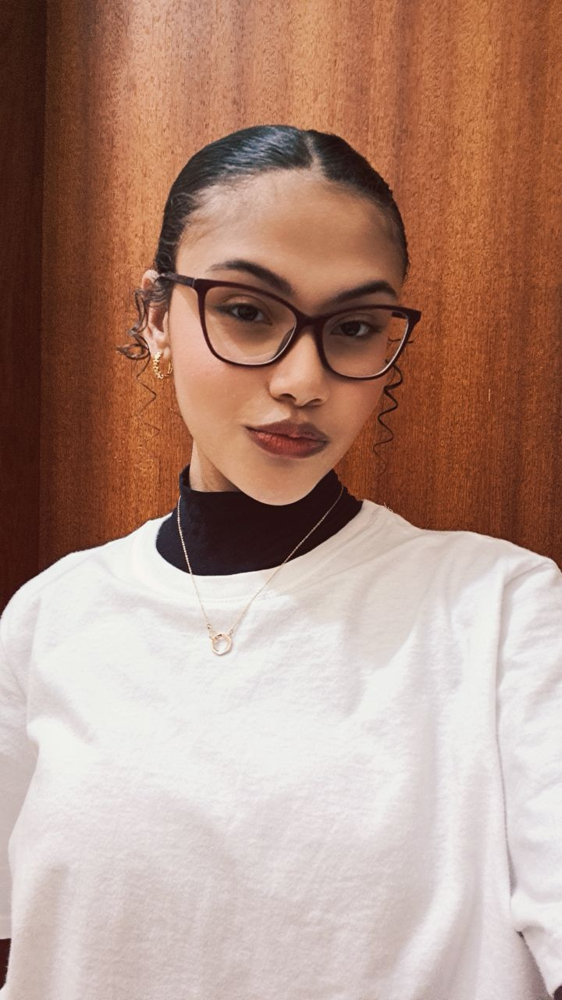
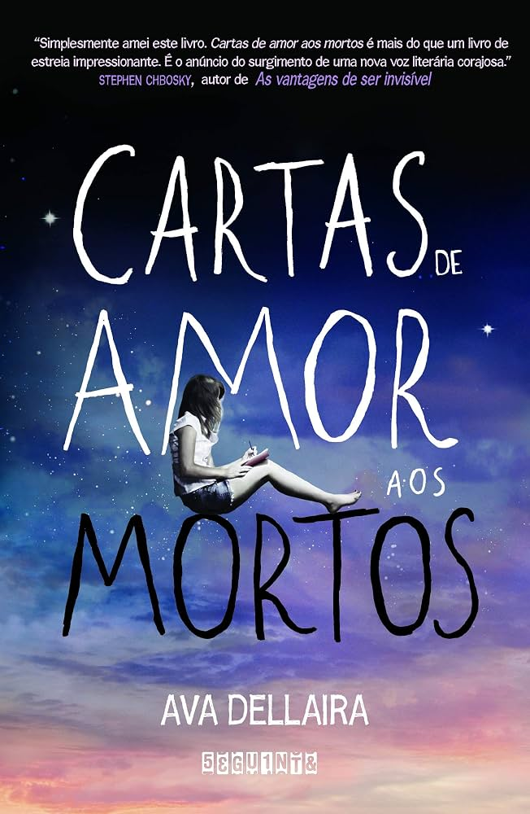
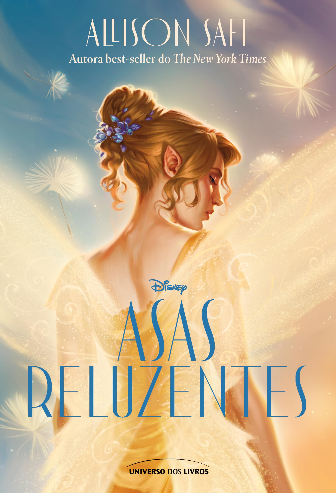
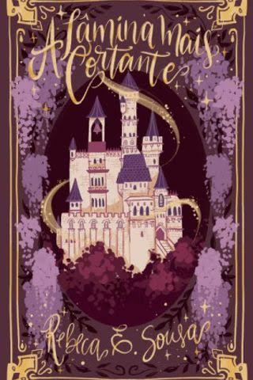
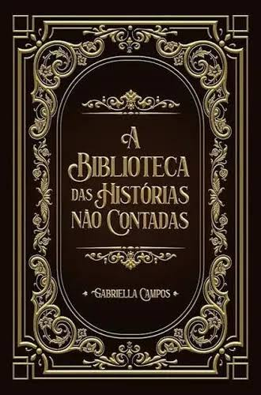

Sobre mim
Sou uma pessoa criativa, curiosa e apaixonada por dança, escrita e música. Gosto de aprender coisas novas, transformar ideias em projetos e colocar um pouco de mim em tudo o que faço. Valorizo minha fé, minha família e as pessoas que fazem parte da minha vida.

Meus hobbies e interesses
💃 Dançar
A dança faz parte de quem eu sou. É através dela que eu me expresso e me sinto verdadeiramente eu. Mais do que uma paixão, ela é uma parte importante da minha vida.
📚 Ler e escrever
A leitura e a escrita são formas de escapar da realidade e criar novos mundos. Amo me perder em histórias e transformar meus próprios pensamentos em palavras.
Meus livros favoritos

Carta de Amor aos Mortos

Asas Reluzentes

A Lâmina Mais Cortante

A Biblioteca das Histórias Não Contadas
Meus conhecimentos e tecnologias
Gosto de aprender, criar projetos e descobrir novas formas de usar a tecnologia de maneira criativa. Durante meus estudos, venho desenvolvendo conhecimentos em programação e desenvolvimento de sistemas. Algumas tecnologias que conheço ou tenho interesse em aprender são:
- HTML
- CSS
- JavaScript
- Python
- Banco de dados
Meu objetivo para o futuro
Meu objetivo é continuar aprendendo, crescer profissionalmente e trabalhar com algo que eu realmente ame, unindo minha criatividade aos meus conhecimentos.